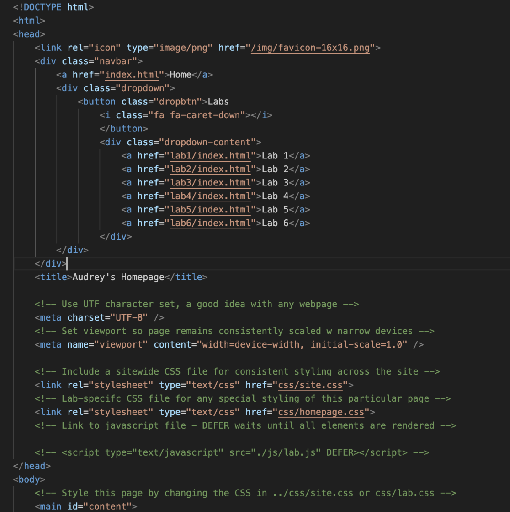
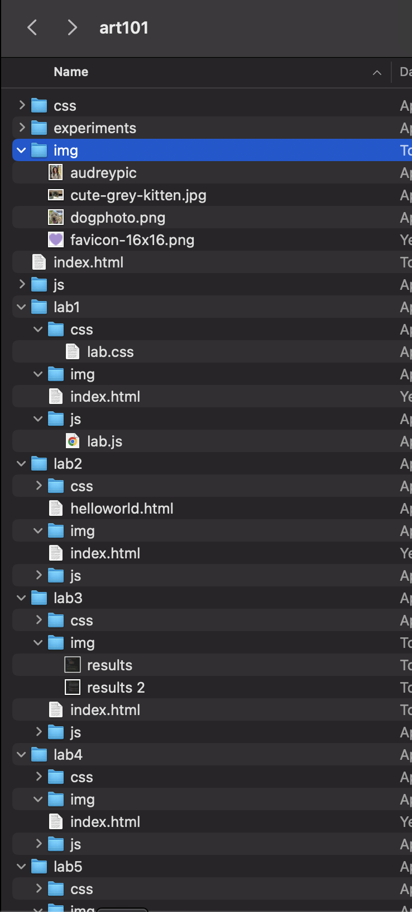

Lab 3 - File Structure and File Transfer
Challenge
The challenge of the lab is to ensure that we have the correct file structure, have the labs linked, be able to add images, and to customize our home page.
Problems
I had some problems with linking the labs, originally I had the labs linked with their git hub links but after the lecture and discussing with my partner I learned that we should do it with the index.html files. I had some problems with linking back then I realized that I had the formatting for back linking incorrect so I made sure to add the ".." and things worked. I also tried to install a favicon and it worked on the live server but I am still trying to figure out how to make sure it shows up on the browser.
Reflection
My partner and I worked really well together to help solve the problems we were facing. We sat together and we helped each other work through our issues with the links and other little technical issues. I worked hard to try new things like the drop down menu with the links and adding a home button. I shared the new things that I learned with my partner.
Results
This is the html code for my homepage.

This is a screenshot of my index.html and file structure
